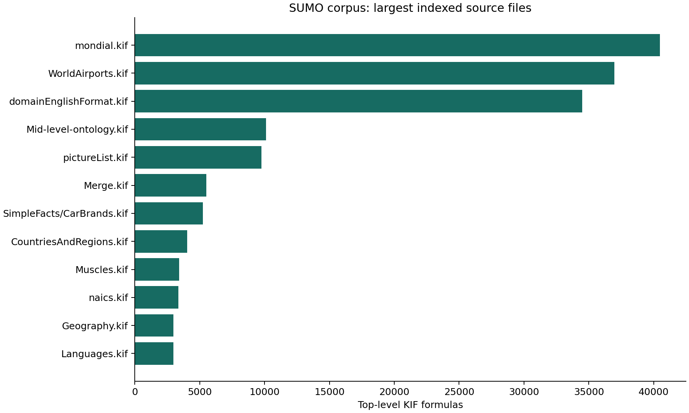
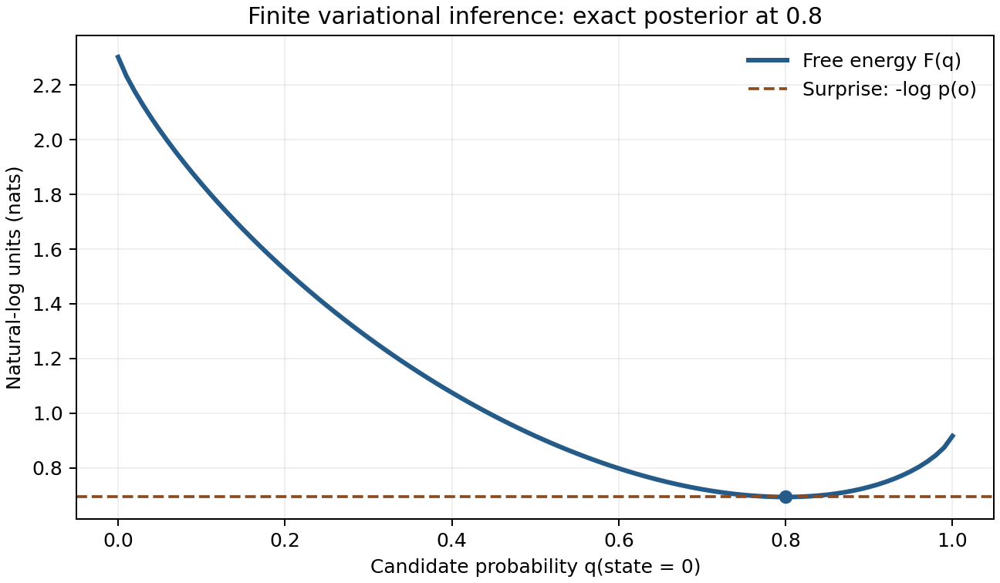

Rikishi: a reproducible SUMO ontology operator
Software methods manuscript, version 0.1.0
Abstract
Rikishi organizes local work with the Suggested Upper Merged Ontology
(SUMO) around reproducible source acquisition, inspectable ontology
data, explicit reasoning operations, and machine-readable interfaces.
Its research extension provides a finite variational free-energy example
and proposed connections to source-pinned Lean declarations in the
Active Inference Institute’s fep_formal repository. The
package separates source provenance, numerical calculation,
theorem-prover output, and formal proof claims. This manuscript
describes that separation, the finite example, an operator workflow, and
the evidence required for future semantic alignment. The correspondence
is exploratory: no general SUMO-to-Lean equivalence or biological
free-energy theorem is claimed.
Motivation and scope
An ontology environment needs more than a downloaded vocabulary. Researchers need to know which revision they queried, which formulas support a graph view, what a reasoner actually established, and how to repeat an experiment. Rikishi addresses these operational needs while keeping the upstream ontology authoritative.
The upstream SUMO repository distributes SUO-KIF sources and accompanying resources. Rikishi uses those real sources rather than a replacement demonstration ontology. Software interfaces expose selected operations and observations; they do not redefine the ontology’s semantics. The package name refers to a sumo wrestler and distinguishes the operator software from the ontology it operates.
System design
Source and runtime provenance
Acquisition records an upstream Git revision. A source index offers term lookup, formula context, and descriptive summaries. Reasoning is a separate activity with its own input set, translation or language assumptions, tool version, and output. The environment’s runtime documentation defines which backend is available and how to reproduce its checks. A successful installation is not a consistency proof.
Source-derived relationships support navigation but require interpretation. For example, a relation occurring inside an implication cannot automatically be read as an unconditional fact. Similarly, a class name appearing in documentation is not an asserted instance. Quantification, polarity, and formula structure must remain available to the researcher.
Interfaces and quantification
The command line, local dashboard, and MCP server provide entrypoints for human and agent workflows. Useful descriptive quantities include parsed formula counts, symbol frequencies, relation frequencies, and source coverage. Such measurements describe the selected files and indexing policy. They cannot establish completeness, consistency, empirical validity, or the quality of an ontological commitment.
An operator should retain the query and its result together with source revision, configuration, and diagnostics. A failed parser or reasoner invocation is evidence about that invocation. It must remain visible rather than being replaced by an empty result that appears successful.
Corpus and reasoning observations
Corpus measurements
The exported corpus at SUMO revision
efcd059f8feebfe3488a09f575f88d4d009b1e5c contains
144 KIF files, 212845 top-level
formulas, 34885 distinct indexed symbols, and
71701 asserted binary edges, with 0 parse
errors. These values are substituted directly from
output/data/corpus.json during rendering; the receipt
records the export hash and substituted values. Nested sources are
included by the index, whereas Sigma’s default knowledge-base profile
selects top-level domain files. Thus corpus size must not be mistaken
for the set loaded into one reasoner.

The distribution is heterogeneous: large geographical and language-related files contribute many formulas. A count is sensitive to the chosen source revision and file-selection policy. Duplicate meanings, redundant formulas, or development proposals may be represented; the measure does not estimate independent facts.
Source-bound taxonomic proof
The command
uv run rikishi taxonomy-proof Human AutonomousAgent
projects direct subclass assertions from
Merge.kif into a first-order problem and adds an explicit
transitivity rule. The installed E prover returned Theorem
for that problem in the recorded run.
output/reasoning/taxonomy.json records the original
assertions and source locations, taxonomy.p contains the
TPTP problem, and taxonomy.result.json retains the command,
exit status, and proof-search output.
This is a restricted taxonomic projection, not full SUMO inference. It does not translate arbitrary SUO-KIF formulas, import all domain axioms, reason about FEP mathematics, or establish ontology-wide consistency. The proof obligation is the projected subclass relation under the supplied direct facts and transitivity. Other conjectures may yield countermodels or inconclusive search statuses; those outcomes must retain their original scope.
The native Sigma pipeline was also exercised with the
four-constituent core knowledge base, after a versioned compound-type
guard patch. It returned SZSTheorem for
(subclass Human Animal), but the negative control
(subclass Human Artifact) returned
SZSContradictoryAxioms. This exposes an unresolved
inconsistency in the translated core problem; whether it originates in
ontology axioms or translation has not been established. Consequently,
the native core run does not certify meaningful semantic validation,
even when a positive query returns a theorem status. This limitation is
separate from the independently checked restricted taxonomic projection
above.
A finite free-energy example
Let the latent state be binary and let one observation have
likelihoods 0.8 and 0.2 under the two states. The prior is uniform.
Consequently, the joint mass for this observation is
(0.4, 0.1), its evidence is 0.5, and the exact posterior is
(0.8, 0.2). These values define a small, completely
inspectable model.
For a normalized candidate distribution \(q\), define the variational objective
\[F(q)=\sum_s q(s)\log\frac{q(s)}{p(s,o)}.\]
On the supported domain it satisfies
\[F(q)=D_{KL}(q\Vert p(\cdot\mid o))-\log p(o).\]
Natural logarithms make the units nats. At the uniform candidate, direct calculation gives \(F=\log(2.5)\), approximately 0.916291. Surprise is \(\log(2)\), approximately 0.693147, and posterior divergence is \(\log(1.25)\), approximately 0.223144. At the exact posterior the divergence is zero and the objective equals surprise. The implementation evaluates the objective and the decomposition separately and reports their floating-point residual.

The numerical contract rejects nonfinite, negative, nonnormalized, mismatched, and unsupported inputs. Zero candidate probability contributes zero. Positive candidate mass at zero joint probability is rejected because the extended-real objective would be infinite. This finite JSON interface deliberately reports a domain error instead of encoding infinity or inventing a finite penalty.
Tests compare against the independent logarithmic values above and check the exact posterior minimum. Invalid vectors provide negative controls: acceptance of an unnormalized prior or zero-evidence observation must fail the test. This example shows inference in a chosen model. It makes no empirical claim about organisms or their physical dynamics.
Connections to formalization
The inspected fep_formal revision is
9a0694f16b8e89b66b2f7f8cc7426c650dd2c4de. Its
finite-information module contains declarations for KL nonnegativity,
self-divergence, and the relation between KL, cross-entropy, and
entropy. Rikishi retrieves these declarations from committed Git objects
and produces exact source links. This is source inspection; this
workflow does not compile Lean or reconstruct a proof certificate.
An important semantic boundary occurs at zero reference mass. The
inspected Lean definition uses totalized real division and a
klFun integrand. Its logarithmic identity requires strict
support assumptions. The numerical operator’s rejection of unsupported
positive mass therefore cannot be identified with the Lean definition
over every input. A formal bridge must state its restricted domain and
prove the relationship rather than infer it from the shared name
“KL”.
The candidate vocabulary mappings in
config/fep_mappings.json identify probability, functions,
real-valued quantities, reasoning, processes, and agents as areas to
investigate in SUMO. Each mapping is explicitly proposed and carries an
outstanding obligation. Shared vocabulary alone does not establish
mathematical equivalence. A future bridge must supply a carrier
interpretation, type and argument translation, normalization and support
conditions, and a soundness argument for the exact target fragment.
The separate examples/fep-ontology.kif extension gives
an inspectable vocabulary experiment:
RikishiVariationalInference is proposed as a subclass of
Reasoning, RikishiFiniteGenerativeModel as a
subclass of Proposition, and the binary example as an
instance of the inference class. The six formulas include documentation
of their intended use and limitations. These author-created assertions
are kept outside the upstream checkout. They neither enforce numerical
normalization nor transport a Lean proof; their adequacy as an ontology
model remains a research question requiring explicit interpretation and
review.
Reproducible workflow
- Prepare the declared Python environment and external storage paths.
- Install the pinned SUMO sources and runtime using the package’s operator commands.
- Record source and tool identities before indexing or reasoning.
- Retain query, source context, diagnostics, and proof-search output together.
- Execute the finite example and inspect its residual and negative controls.
- Render this manuscript through the docxology/template adapters and inspect the resulting PDF, DOCX, and HTML.
The renderer writes numerical JSON and a figure before publication. It records source and output hashes, artifact sizes, and the template revision in a receipt. Those records support byte-level reproducibility and identify dependencies; they do not replace scientific review. A changed upstream revision, local configuration, or rendering dependency requires a fresh receipt.
Contribution and limitations
Upstream issues and pull requests should contain a minimal reproducer and a precise claim. Timeout or unknown proof-search status does not establish that a statement is false. A vocabulary mismatch does not establish an ontology defect. Private research content should be excluded from public reports unless deliberately released.
The present numerical module uses floating-point arithmetic and a finite carrier. It does not provide arbitrary-precision or log-domain inference, continuous-state models, learned likelihoods, or biological parameter estimation. The source bridge does not perform automatic ontology-to-Lean translation. The dashboard is a local research interface whose deployment security requires separate evaluation before public hosting. These boundaries make the package’s evidence interpretable and define concrete next experiments.